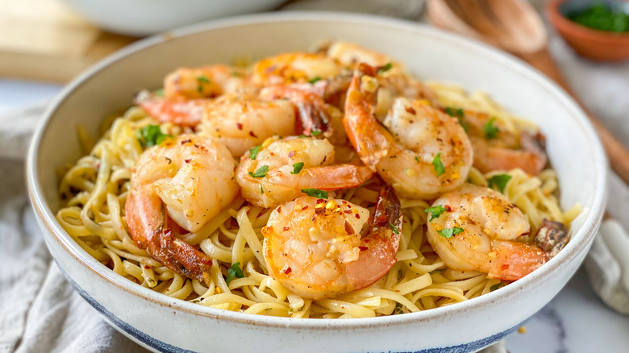

Shrimp Scampi

Description
Scampi are tiny, lobster-like crustaceans with pale pink shells (also called langoustines).
Italian cooks in the United States swapped shrimp for scampi, but kept both names.
Thus the dish was born, along with inevitable variations.
This classic recipe makes a simple garlic, white wine and butter sauce that goes well with a pile of pasta or with a hunk of crusty bread. However you make the dish, once the shrimp are added to the pan, the trick is to cook them just long enough that they turn pink all over, but not until their bodies curl into rounds with the texture of tires.
Ingredients
- 2 tablespoons butter
- 2 tablespoons extra-virgin olive oil
- 4 garlic cloves, minced
- 1/2 cup dry white wine or broth
- 3/4 teaspoon kosher salt, or to taste
- 1/8 teaspoon crushed red pepper flakes, or to taste
- Freshly ground black pepper
- 1 3/4 pounds large or extra-large shrimp, shelled
- 1/3 cup chopped parsley
- Freshly squeezed juice of half a lemon
- Cooked pasta or crusty bread
Steps
- In a large skillet, melt butter with olive oil. Add garlic and sauté until fragrant, about 1 minute. Add wine or broth, salt, red pepper flakes and plenty of black pepper and bring to a simmer. Let wine reduce by half, about 2 minutes.
- Add shrimp and sauté until they just turn pink, 2 to 4 minutes depending upon their size. Stir in the parsley and lemon juice and serve over pasta or accompanied by crusty bread.